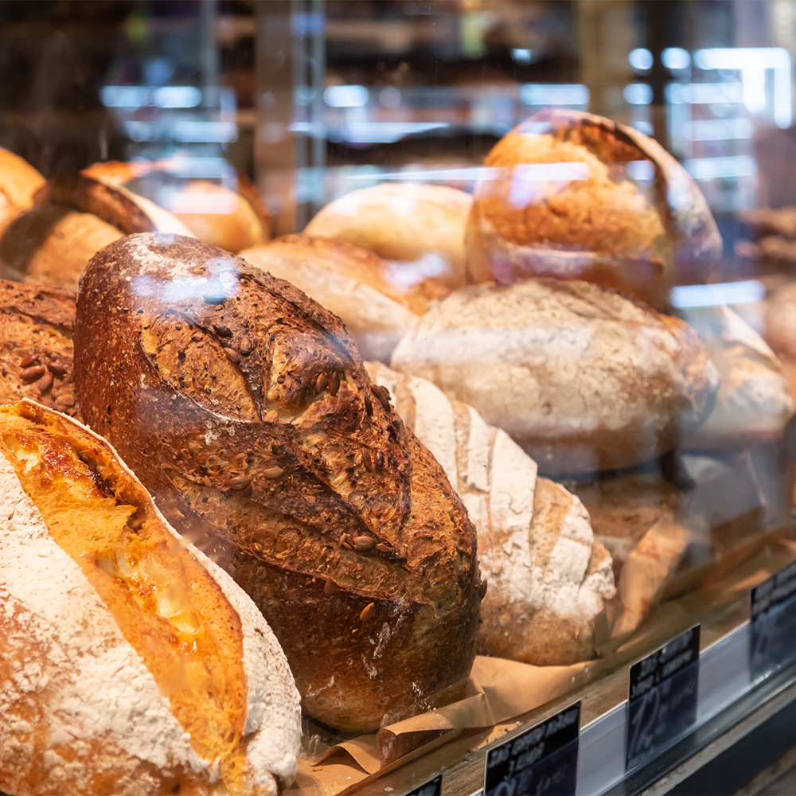
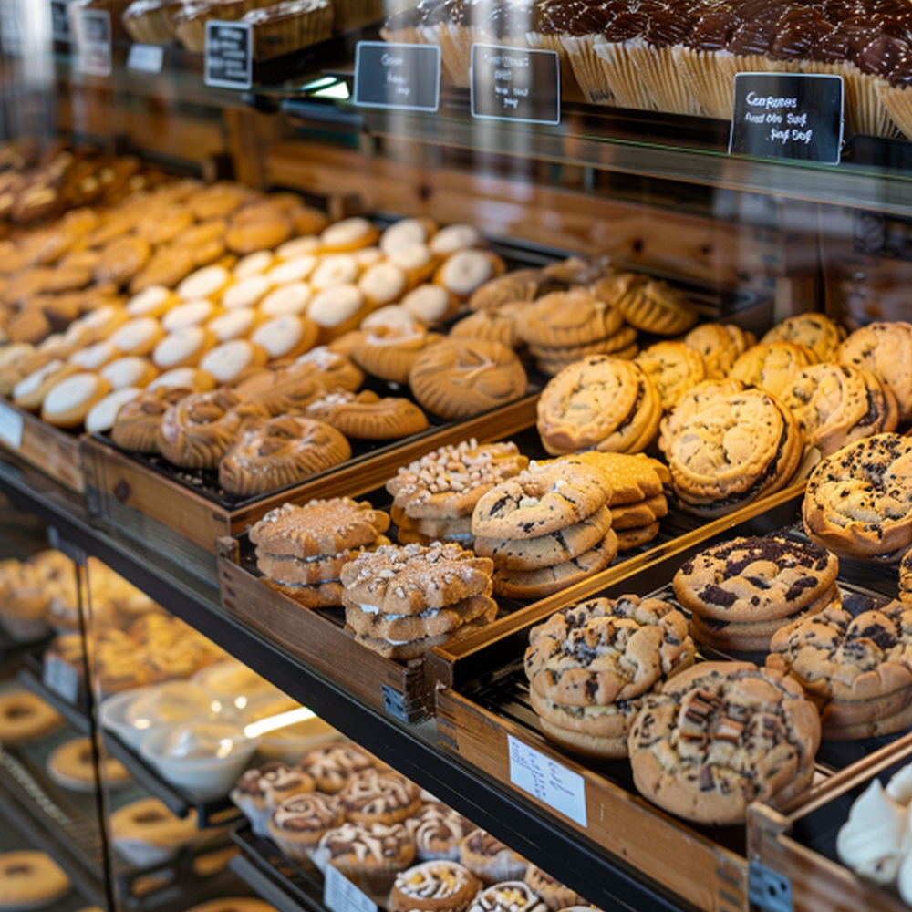
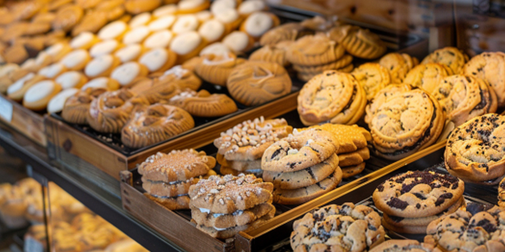

About North Star Bakery
A Neighborhood Bakery
North Star Bakery is the selected client for this student website. The site introduces its breads, pastries, and cakes and gives visitors a simple way to explore the menu.

The bakery concept focuses on everyday treats and baked goods for family gatherings and special occasions.
Helping Customers Find What They Need

The Products page groups the menu by type. The Home page provides sample visiting information, and the Contact Us page collects questions about products and pickup requests.

Dietary Questions
Please ask about ingredients and possible allergen contact before choosing a product. This sample menu does not make allergen-free claims.
Get in Touch
Contact us with a bakery question or browse our sample menu.